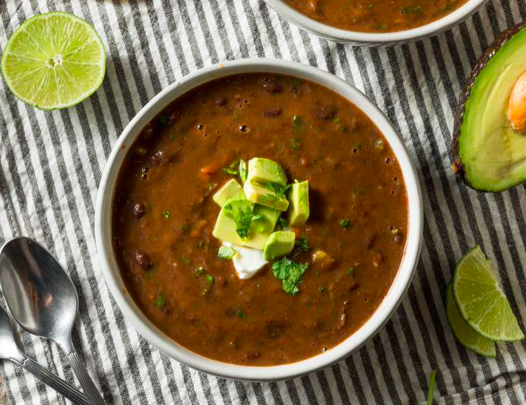

Black Bean Soup

Servings: 2 bowls
Directions
- Combine 1st 6 ingredients in pot, simmer 10 min
- Add 3/4 can of black beans, salt & cumin, cook 5 min
- Add remainder of beans
- Puree soup
- Add remainder of beans
- Combine cornstarch with water
- Add lemon juice & cornstarch to soup, cook until thickend
- Serve in sourdough bread bowl
Ingredients
- 1 onion, chopped
- 2 garlic cloves, minced
- 2 celery ribs, chopped
- 1/4 red bell pepper, chopped
- 2 chicken bolilon cubes
- 1 & 1/4 cups boiling water
- 2 cans black beans, undrained
- 1/2 tsp salt
- 1/2 tsp cumin
- 1 tsp lemon juice
- 1 & 1/2 Tbs corn starch
- 1 & 1/2 Tbs water